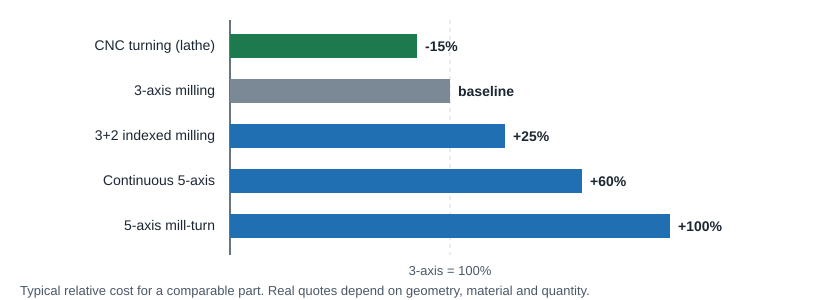

CNC Machining
Cost Reduction Tips
Machining cost is mostly machine time plus setup time. These design changes shorten one or both. Use this page as a checklist before sending a part for quote.
Geometry
- Radius inside vertical corners. At least one third of the cavity depth, larger is better, and slightly larger than a standard cutter radius. Use the same radius everywhere. Corners & pockets
- Keep floor fillets small or zero. Use a standard bullnose radius (about 0.5 to 1 mm) or none.
- Limit cavity depth. Keep depth under 4x the largest XY dimension of the cavity.
- Relieve corners instead of shrinking the radius when a square part must fit. Dog-bone and T-bone reliefs allow deep, functionally sharp corners with a big cutter. Reliefs
- Thicken thin walls. Over 0.8 mm (0.030 in) in metal and 1.5 mm (0.060 in) in plastic; thicker is better. Walls
- Avoid small features with a high aspect ratio. Keep height under 4x width, or brace them.
- Don't machine what you don't need. Let waste fall away instead of pocketing it into chips; keep the part close to its bounding box. Example
- Skip decorative edge fillets. Use chamfers or a "break sharp edges" note, or deburr prototypes yourself.
Holes and threads
- Use standard drill sizes. Up to 10 mm, use 0.1 mm increments; above 10 mm, 0.5 mm increments. In inch, use fractional, number or letter drill sizes. Drill charts
- Use standard threads (UNC, UNF, ISO metric coarse/fine). Odd pitches need custom tools. Thread tables
- Limit thread length to about 2 to 3x the diameter, and leave at least half a diameter of unthreaded depth at the bottom of blind holes. Thread rules
- Don't model threads. Model the pilot hole and call the thread out. Modeled threads confuse quoting and may be milled as geometry.
- Prefer through holes to blind holes, and keep hole depth under about 4x diameter (10x maximum).
Setups and process

- Minimize setups. Aim for simple 2.5D geometry that can be cut from one side. If that is not possible, split the part into pieces that are assembled later. Setups
- Design round parts for the lathe. Axially symmetric parts are cheaper to turn than to mill. Turning
- Save 5-axis for geometry that needs it. Group angled features onto as few angles as possible. Milling
- Size the part to stock. Keep the finished part a few millimetres under a standard blank size. Stock sizes
Tolerances, finish and marking
- Specify tight tolerances only where needed, and reference them all from a single datum. Tolerances
- Avoid multiple surface finishes on one part; each adds a process step.
- Laser mark instead of machining text. If text must be machined, engrave rather than emboss, use 20 pt or larger sans serif fonts, and supply vector artwork. Text
Material and quantity
- Choose machinable materials. Soft metals like aluminum and brass cut much faster than steel, stainless or titanium. Materials
- Consider stock price. 6061 aluminum is cheap; 7075, stainless and brass cost several times more; PEEK costs roughly ten times more than common plastics.
- For volume, free-machining grades pay off. 303 stainless and C360 brass cost more per pound but cut so much faster that unit price drops.
- Order in sensible quantities. Programming and setup are paid once per batch, so unit price falls quickly as quantity rises, then flattens past a few hundred to a few thousand parts.
Six quick wins
Relieve corner pockets
Add a U or C shaped relief in each corner so a large cutter can finish deep pockets that fit square parts.
Deburr it yourself
Edge breaks milled with a ball end mill take a long 3D pass. A file or deburr tool on prototypes is cheaper.
Leave text for production
Engraving needs tiny, slow cutters. Add text later by laser or in the mold.
Beef up thin walls
Walls at 0.020 in (0.5 mm) or less can break, flex or warp. Make them as thick as the design allows.
Keep it simple
Very deep pockets, sculpted surfaces, deep holes and long threads drive cost. Split complex parts into simpler ones.
Try another material
Swap 17-4 for 304/316L, copper for aluminum, 4140 for case-hardened 1018 when the application allows.
ProtoLabs "15 Design Tips to Reduce the Cost of CNC Machining" · ProtoLabs: 6 ways to optimize part design for CNC machining · ProtoLabs Definitive Guide to CNC Machining (mistakes to avoid) · Xometry CNC Machining Design Guide (hole ratios, thread length).